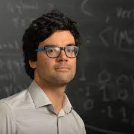

Academic website of Umut Varolgunes

CV / blog / arxiv
Papers
- On the equatorial Dehn twist of a Lagrangian nodal sphere , Proc. of the 22nd Gokova Geometry/Topology conference (2017), 112--137 arxiv
- Mayer-Vietoris property for relative symplectic cohomology, Geometry & Topology 25-2 (2021), 547--642 (thesis , arxiv)
- Seifert form of chain type invertible singularities, accepted for publication in Kyoto Journal of Math arxiv
- Super-rigidity of certain skeleta using relative symplectic cohomology (joint with Dmitry Tonkonog), accepted for publication in J. of Topology & Analysis arxiv
- On certain quantifications of Gromov's non-squeezing theorem (joint with Kevin Sackel, Antoine Song and Jonathan Zhu), accepted for publication in Geometry & Topology arxiv
- On homological mirror symmetry for chain type singularities (joint with Alexander Polishchuk) arxiv
- Quantum cohomology as a deformation of symplectic cohomology (joint with Nick Sheridan and Strom Borman), JFPTA Viterbo 60 Volume 24 (2022), 1--77 arxiv
- Locality of relative symplectic cohomology for complete embeddings (joint with Yoel Groman) arxiv
- Framed E_2 structures in Floer theory (joint with Mohammed Abouzaid and Yoel Groman) arxiv
- Closed string mirrors of symplectic cluster manifolds (joint with Yoel Groman) arxiv